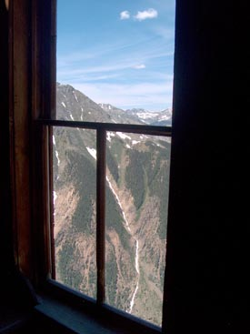

|
Haunted at Timberline Home

Ghost Towns
Animas Forks
St. Elmo
Floresta
Crystal City
Summitville
Holy Cross City
Alpine Tunnel
Vulcan
Shavano
South London
Independence
Ashcroft
Telluride
Alta
Carson
Tomboy Mine
Ironton
Iris
Bonanza
Silverton
Passes
Engineer Pass
Cumberland Pass
Mosquito Pass
Cottonwood Pass
Independence Pass
Ophir Pass
Monarch Pass
Imogene Pass
Cemeteries
Crested Butte
Whitepine
Glenwood Springs
Ophir
Creede
Exchequer
About Haunted at Timberline
|
About Silverton
Return to Silverton main page
In the time since the 1870's, a quarter of a billion dollars in gold, silver, lead,
copper and zinc have been pulled out of the mountains surrounding Silverton.
As recently as 1991, when the Mayflower Mine finally shut down, Silverton has
continued to produce. Nearly half of the gold remains in the
Buffalo Boy Mine,
which was forced to close after its mill burned down and the Great Depression
was setting in. The Buffalo Bill is shown in the bottom two photos below.
Silverton's most celebrated miner is probably Reinhardt Niegold, who,
along with other members of his German family, staked many claims in the 1870's.
Much of his mining was done in the Old Hundred Mine, named for Psalm 100 of the
Bible. The highest level of the Old Hundred is called Seven Level, after the
Seven Level vein originally worked by Reinhardt. The Seven Level boarding house
where Reinholdt and others lived still remains, and is shown in the
opening photo. The top left photo, below,
shows a view from a bedroom window in the boarding house, and the top right
photo shows a memorial to Reinhardt, with the Seven Level boarding house and
upper terminal of the tram just down the hill. The memorial reads:
REINHARDT F. NIEGOLD
1852 - NOV. 25, 1906
BORN IN GERMANY
HIS ASHES SCATTERED TO
THE FOUR WINDS OF HEAVEN
FROM THE OLD HUNDRED MINE
In the opening photo, you can see Silverton in
the distance, in the valley to the right of the boarding house. Between Silverton
and the Old Hundred Mine are the remains of Howardsville, the most impressive of
which is the Little Nation tram, shown in the middle photo below, which serviced the Little Nation Mine.

![[Howardsville]](../images/silver4.jpg)
Web site maintained by Bradford Harrison
|